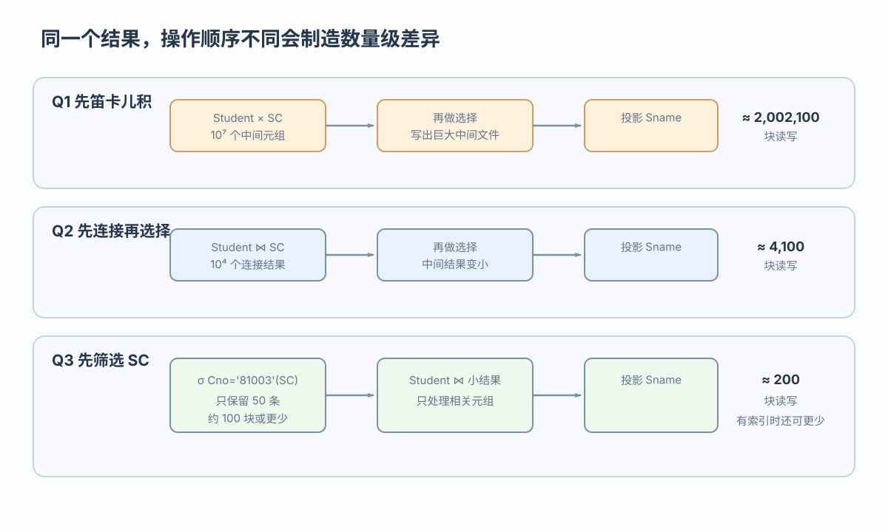
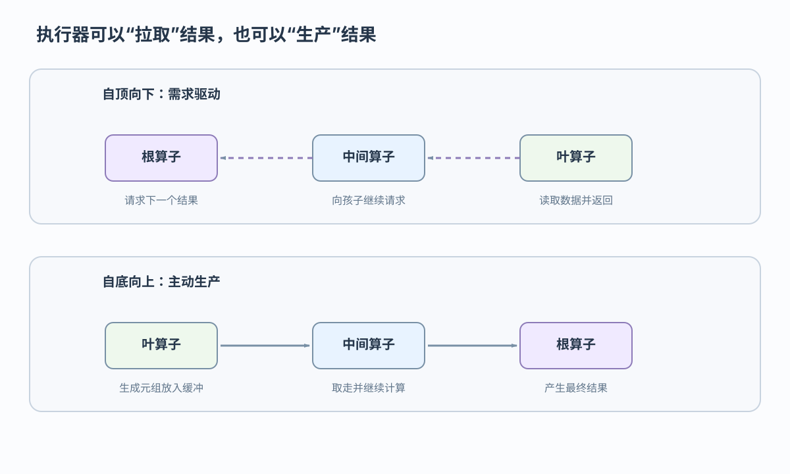

用户／应用
用户和应用表达结果需求，不指定存取路径
在结果等价的前提下选择较低代价的执行计划
 VER. 2608.2
Built with impress.js
VER. 2608.2
Built with impress.js
查询优化在结果等价的基础上比较逻辑改写、物理路径和执行方向
高层表达让系统可以利用数据字典、统计信息和当前物理状态
用户和应用表达结果需求，不指定存取路径
优化器从合法内部表示出发改写逻辑表达式，再比较物理候选
表块、索引、内存和数据分布变化后，系统可能重新优化
集中式系统尤其关注块 I/O；分布式系统还要估计节点间通信
I/O 包括块的读取、写出和随机访问
CPU 处理比较、排序和哈希计算
内存提供缓冲区以及排序、哈希工作区
通信表示分布式节点之间传输数据
常见组合策略是先用启发式缩小候选，再估算代价并选择较优计划；实际优化器不一定固定按此顺序执行
结果不变，参与后续操作的中间关系变小

SELECT Student.Sname FROM Student, SC WHERE Student.Sno = SC.Sno AND SC.Cno = '81003'
在相同关系模式和语义下，Q1 ≡ Q2 ≡ Q3 表示结果相同；它们是等价关系代数表达式，不是已经确定的物理执行计划
先过滤元组，再连接和投影；在示例假设下，块读写估算可从约 2,002,100 降到约 200
示例假设：Student 有 1000 条记录，SC 有 10000 条记录，Cno='81003' 命中 50 条记录
| 计划 | 中间结果 | 示例假设下块读写估算 |
|---|---|---|
| 先笛卡儿积 | 约 10⁷ 个元组 | 约 2,002,100 块 |
| 先连接再选择 | 约 10⁴ 个连接结果 | 约 4,100 块 |
| 先选择 SC | 只保留 50 条课程记录 | 约 200 块 |
差异来自中间结果规模和扫描次数；这些数字只属于本组示例假设，不是跨数据库常数
重点是减少中间数据和重复扫描，同时保持关系代数等价
把选择条件尽可能移向叶端
把投影尽早下推，去掉无用列，但保留后续连接和选择所需属性
把笛卡儿积和连接条件合为连接
结果较小且复用成本合算时，再共享公共子表达式
Sno 等后续连接属性，不把连接列投影掉逻辑计划不变，扫描、索引、排序和哈希会改变执行代价
| 选择对象 | 候选 | 依据 |
|---|---|---|
| 单表选择 | 全表或索引扫描 | 表大小和选择率 |
| 等值连接 | 索引、排序—合并、哈希或嵌套循环 | 索引、排序、块数和内存 |
| 通用连接 | 嵌套循环等候选 | 块数量和可用缓冲 |
| 条件组合 | 组合索引或多个索引 | 条件结构与选择性 |
Student ⋈ SC 可使用嵌套循环、排序—合并、索引连接或哈希连接；物理优化依据条件筛选候选，不重新定义算法
规则通常有效，但只是候选起点，不保证每种数据状态都最好
优化器需要知道数据规模、分布和索引状态
| 信息 | 例子 | 用途 |
|---|---|---|
| 表级 | 元组数、块数、元组长度 | 扫描和连接成本 |
| 列级 | 不同值个数、分布 | 选择率估算 |
| 索引级 | 层数、叶数、选择基数 | 索引扫描成本 |
| 系统级 | 内存和通信条件 | 计划总体代价 |
f ≈ 1/m ｜ 全表扫描 cost ≈ B ｜ 主码 B+树等值查找 `cost ≈ L+1`不能保证。B、L、m 和 f 只形成代价估算；数据分布、缓存和统计信息变化都可能改变实际结果
执行器按计划读取基本表或索引，并逐层产生输出
计划树同时描述访问路径和关系算子；叶节点表示基本表或索引访问
两种方向对应不同的请求、缓冲和流水行为

| 方式 | 请求或元组关系 | 直观特点 |
|---|---|---|
| 自顶向下 | 根算子请求向下；元组逐层向上返回 | 需求驱动，按需拉取一条或一批 |
| 自底向上 | 叶算子生成元组写入缓冲，父算子取走 | 主动生产，可能受缓冲和阻塞影响 |
| 共同目标 | 按计划完成查询 | 结果语义不改变 |
不是。自顶向下时请求向下、结果向上；自底向上时叶算子主动生产元组
查询优化把语义等价的逻辑表达式连接到物理代价判断
关系代数变换保持结果不变
选择与投影尽早下推以减少中间结果
启发式、统计信息和代价估算共同选择物理路径
执行器按需求驱动或主动生产的方式推进算子
结果等价不代表代价相同；选择率、块数、内存和统计信息共同影响计划
SC.Cno='81003' 下推，并列出必须保留的连接属性？B、m、f、L、块数、排序、索引与内存，怎样选择扫描和 Student⋈SC 的连接算法？等价变换与代价估算需要结合选择率、块数和索引条件；执行器方向可用自顶向下与自底向上对照理解